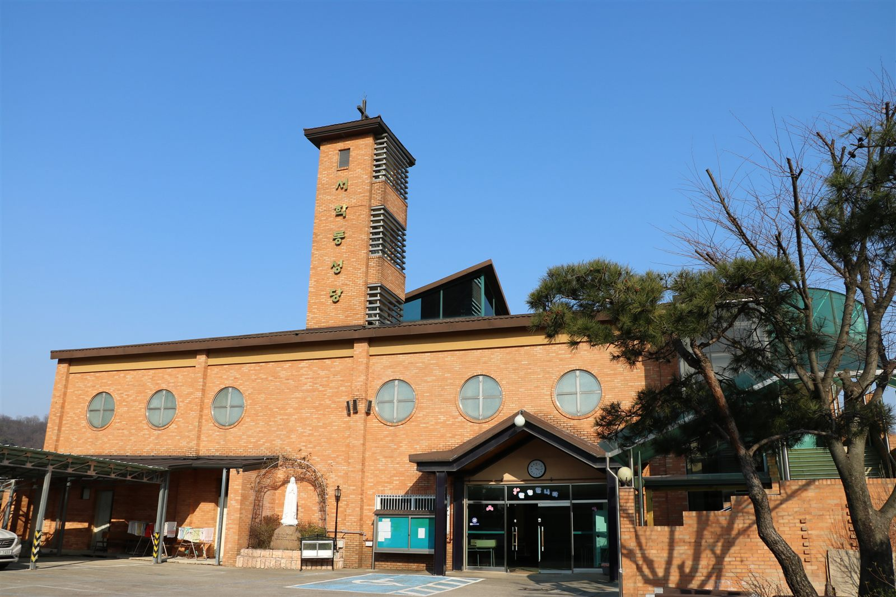

천주교 전주교구
“치명자산의 품, 함께 걷는 신앙의 길”
전주의 역사와 치명자산의 순교 신앙을 품고,
이웃과 사랑을 나누며 하느님을 향해 걸어갑니다.
신앙의 기쁨을 함께 나누고, 세대를 이어 믿음을 전하며,
일상의 삶 속에서 복음의 가치를 실천하는 따뜻한 공동체.
서학동성당입니다.
“그러나 나와 내 집안은 주님을 섬기리라.” 여호수아기 24장 15절

전동성당에서 분리되었다고 전해지는 서학동성당은 1968년에 설립되어
예수·마리아·요셉의 성가정을 주보로 모시는 신앙공동체입니다.
전주 남부지역 복음화의 뿌리가 되어 온 우리 서학동본당은
말씀과 기도, 나눔을 통해 신앙의 기쁨을 함께 나누고,
세대를 이어 믿음을 전하며, 복음의 가치를 실천하고 있습니다.
역대 주임신부
본당 출신 신부님
“기쁜 소식을 전하는 이들의 발이 얼마나 아름다운가!” 로마서 10장 15절
최근 게시된 주보
“보라, 형제들이 함께 어울려 사는 것이 얼마나 좋고 얼마나 아름다운가!” 시편 133장 1절
“목마른 사람은 다 나에게 와서 마셔라.” 요한복음 7장 37절
전주시 완산구 서학로 51 (우 55101) · 서학동성당